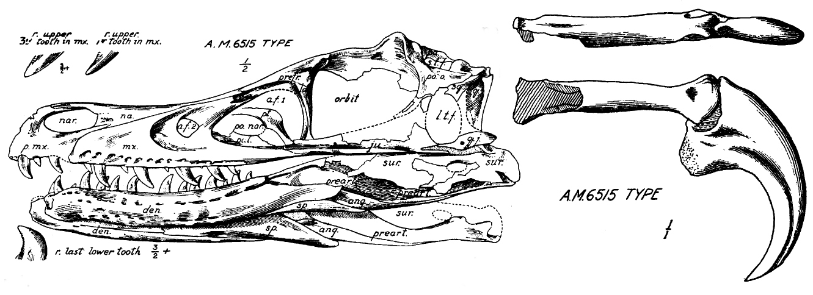
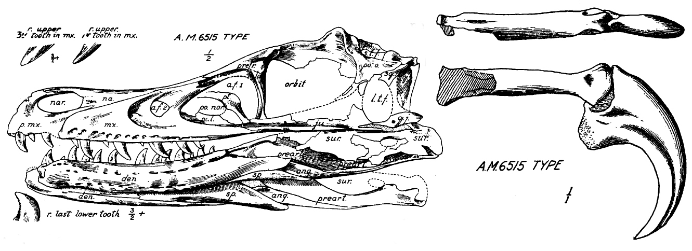

velociraptor is an small
Dromaeosauridae
that lived in mongolian region, in the north of china, asia continent, Velociraptor is in Theropods group that live approximately 84 and 85 million years ago, during the latter part of the Cretaceous. Two species are currently recognized, although others have been assigned in the past. The type species is V. mongoliensis; Fossils of this species have been discovered in Mongolia. The second species, V. Osmolskae, was named in 2008 after the skull found in Inner Mongolia, China.
 

The skull of Velociraptor mongoliensis on display at the American Museum of Natural History and a Drawing of the skull and claw by Henry Fairfield Osborn, 1924.
description
...